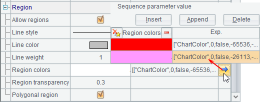
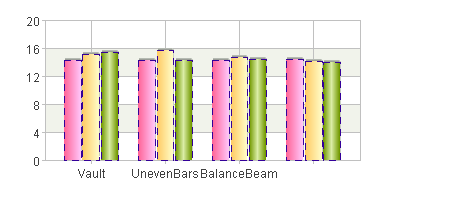
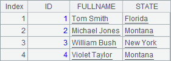
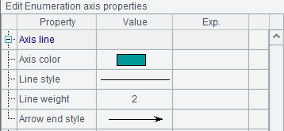
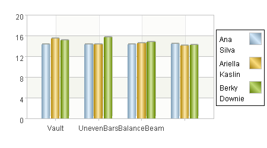

12.6.3 The shaded area
Using line element, you can also make a polyline chart with a shaded area with certain color or certain shape. To do this, modify the chart properties in A6:

By checking Closed area property and setting Area color property, the plotting result is:

With Closed area property checked, an area between the polyline and the Axis 1 set in the data properties interface is created with certain fill colors.
Now check both the Closed area property and the Connect head and tail property, which means modifying the chart properties in A6¡¯s code as follows:

Then you¡¯ll get the following plotting result:

In this case, the shaded area is a closed area formed by connecting the two end points of the polyline.
In particular, to plot a line chart only with end points connected and without fill color, set the fill color transparency as 0 besides checking Closed area and Connect head and tail:

Thus the plotting result would be:

Notice that in this case the data points are transparent too.